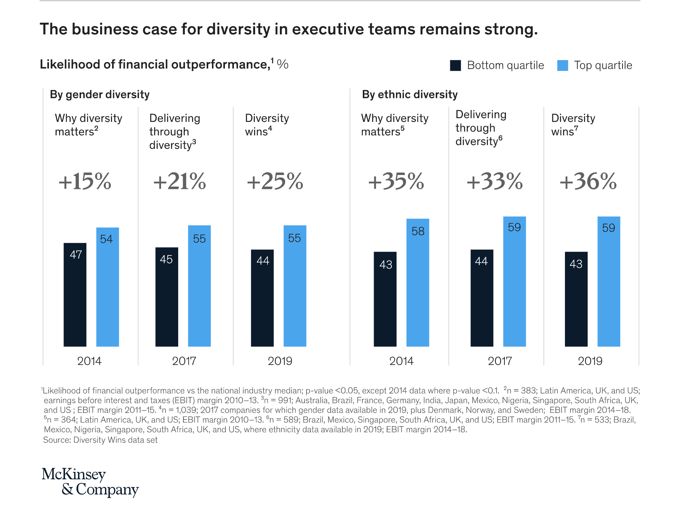

IntroductionMy interest in the workforce diversity of companies' sprung from my interest in the experiences of people like me. I had the privilege of being born and raised in Hong Kong, where I grew up around many people who looked like me. It was only until I moved to the United States for college that I became more conscious of my identity. It was not only because phrases I always used, like "taking the lift" and "revising for school", were British English phrases that were unfamiliar to most Americans, but also because I ended up being in spaces where I felt like I did not belong. As I went through college and through the workforce, especially amid the #MeToo movement, I came to realize further the conscious, collective effort it takes to ensure diversity and representation of people from different identities. Particularly, I am interested in learning about how to increase representation of people from marginalized backgrounds, especially women of color. There seems to be a mainstream shift to the collective intention and efforts to ensure that various identities are respected, valued, and included in the workplace and in society. In recent years, this has manifested in the rising interest and investment in diversity, equity, and inclusion (DEI) initiatives in the workplace. Having a diverse workforce does not just raise the morale of people working, but also sends the signal to people that a company is welcoming. However, with a greater embrace of DEI initiatives comes the dangers of "woke-washing" and "diversity washing"--the hypocrisy of companies in promoting diversity without creating concrete actions in turning promises into reality. A study conducted by DEI scholars Erin Dowell and Marlette Jackson shows the prevalence of "woke-washing" in companies like Adidas, Whole Foods, and Pinterest where employees criticize how corporate statements claiming diversity conceal inequities in the companies' workforce. To address these demands, we can draw from the work of Professor Alnoor Ebrahim at the Fletcher School of Law and Diplomacy, who focuses on developing strategies for various organizations in meeting accountability demands and delivering social change. Transparency is one of four key steps outlined in developing organizational accountability. To improve the representation of women of color in the workforce, we must first understand and be transparent about the problem. Aside from the moral argument, having a diverse workforce is also profitable. A study conducted by McKinsey & Company in 2019 reaffirmed the business case for gender diversity: companies in the first quartile for gender diversity on senior leadership were 25 percent more likely to have above-average profitability than companies in the lowest quartile. The graph below from McKinsey's study shows how financial outperformance correlates with gender and ethnic diveristy. Thus, I hope to use this portfolio project as an opportunity to study the extent to which companies are implementing their goals and commitment to DEI. As a woman of color, I'm especially interested in learning about how equitable HR practices are in various public companies, and how we can improve these HR practices. This project examines the main question, "How diverse are public companies' workforces today?" While most people would likely agree on the importance of DEI initiatives, the types, levels, and measurements of DEI approaches vary by individual, leader, and company. Specifically, I am interested in researching equitable outcomes as opposed to just the DEI goals or plans in various companies to better understand just how diverse, equitable, or inclusive a company or industry is. Also, this project examines the intersection of race and gender because examining the unique intersection of racism and sexism can provide insights into these two key aspects of identity without compromising depth of analysis. As a woman of color, I have a personal interest in learning more about the intersection of race and gender. While gender and race in the workplace provide meaningful slices of identity, in no way does this scope attempt to represent or replace many other aspects of identity--including disability, age, neurodiversity, national origin, documented status, and sexual orientation to name but a few. In addition, please note that insights from this study should not be generalized across the experiences of people of different races and genders in the workplace, as ultimately there are countless meaningful differences between individuals within the same social identity. This project hypothesizes that women of color earn less, have lower seniority, and leave more frequently than white men. Numerous studies that point to a gender pay gap; see Pew Research Center's study in 2020, which helps to inform my hypothesis. To test this hypothesis, this project primarily analyzes record data on six public companies provided by Revelio Labs, a company that gathers data on workforce dynamics. Because workforce diversity data is deemed sensitive by many companies and difficult to obtain in large numbers, I am very thankful to Revelio Labs for collecting, integrating, and organizing the much-needed data of workforce diversity. Revelio Labs generously provided me with a snapshot of six public companies' data, forming the main dataset analyzed in this project. To further understand employee sentiment around these six public companies, this project also analyzes record data gathered via API from Twitter on the same six companies. Questions to address:
|